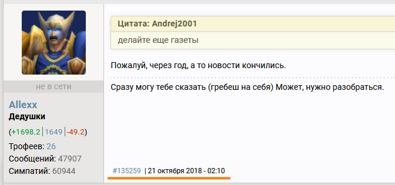
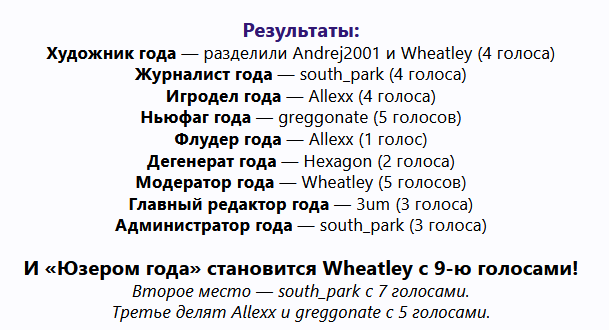
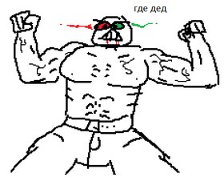
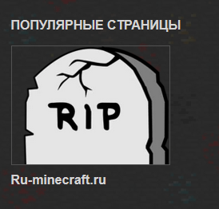

О газете
Добро пожаловать отсюда! Мы соблюдаем традицию ежегодной газеты Румине и публикуем новый выпуск за 2019 год. Без изменений не обошлось. Теперь Румайности перешли на новый уровень и будут размещаться в интернетах, тем самым повысив свою интерактивность до недосягаемых высот. Как же так получилось?
-
Старая версия всегда пилилась в фотошопе - боль и страдание для дорогой редакции, которая своими кривыми руками пыталась в нём разобраться.
-
Место на изображении всегда было жутко ограничено и вынуждало сокращать гору текста, а то и выкидывать некоторые новости целиком.
-
На дворе 2019 год - газеты в виде одной картинки нынче не в тренде, а мы, разумеется, трендам следуем.
Так что данное решение было взвешенным, оправданным и совершенно разумным, а на новый дизайн было потрачено 20 минут. От него, кстати, многого ждать
не стоит. Я не веп-разрабочек и даже не погромист. Здесь можно вставлять картинки со ссылками и писать текст в столбик – уж этого для газеты хватит. А экраны телефонов...
Какие телефоны? Не знаем ничего.
Тем в этом выпуске относительно много. Хоть Румине по многочисленным заверениям экспертов и умер, но уж за год-то новостей и обновлений чутка набралось.
Если кратко, то:
Содержание
-
Юзер Года 2018 и 2019
О последнем юзере года и его дальнейших перспективах
-
Весна
Админы, солёные и мёртвые деды
-
Лето
Эпопея с дедом, новые лица, нашествие квасёров и ДимЮрича, самая нужная рожа на сайте
-
Осень
Правый Майнкрафт
-
Деятельность администраторов
Сломать неломаемое, выложить 10 000 скинов с голым стивом
-
Пользовательский креатив
Опасный Соус, Симулятор и Эпизоды Румине
Юзер Года 2018
Выявление самого крутого пользователя сайта за прошедший год является весьма почетной Руминской традицией.
В пачке номинаций за звание лучшего журналиста / модератора / редактора вот уже много лет юзеры голосовали за ниболее достойного по их
мнению кандидата, выявляя, в итоге, того самого "юзера" года
Для 2к18 судьба его сложилась не лучшим образом, по множеству причин. Малое количество активных пользователей, отсутствие интереса
, недостаток запоминающихся личностей. Само мероприятие началось с опозданием на пол-месяца, в начале января 2019 вместо декабря.
Номинации с 2017 года не претерпели изменений
Во время проведения обнаружилась большая проблема. Юзер года 2018 оказался никому не нужен! В темах отписывалась буквально пара человек, а то и вовсе один, как это вышло с "флудером". Такое положение дел выглядело в некотором роде насмешкой над старой доброй традицией, потому что ну что ж это такое? И это юзер года? Голосуют полтора деда и два ноунейма? Так или иначе результаты голосования можно увидеть где-то поблизости, а перспективы проведение будущего юзера года 2019 сильно сдулись.
А что же 2019?
По традиции через 2 месяца надо будет проводить очередного юзера года. Традиции – дело очень серьёзное, нарушать их не стоит. Наверное.
Или... Может, ну их к чёрту? Интерес пользователей к мероприятию в последний раз был совершенно никакущий, и вот как будто в сейчас что-то изменится?
Экспертное мнение: если оставлять юзера года в неизменном виде много лет подряд и использовать старые номинации прямиком из 2013 года, то да, всё станет ещё хуже,
проще ничего не проводить и дальше сидеть пердеть на диване (неплохая кстати мысль). (ДН, ДД, Юзер Года, Активность...)
И всё же номинации можно изменить под текущие реалии сайта. Никому более не интересны администраторы или главные редакторы, или те же модераторы
года. Все они перестали вызывать интерес своей деятельностью. Журналисты? Ого, у нас на сайте в 2019 году были журналисты?...
Есть только одно решение – переосмыслить список номинаций. Сделать их актуальными для текущего времени. Кто из ветеранов наиболее
эпично "вернулся" на Румине (пусть даже на пару дней)? Чей онлайн вызывает больше всего всего вопросов в стиле "чем он тут вообще занимается"?
Кто является самым ленивым существом на всём сайте? Чья мамка доставила больше всего?
Ответы на подобные вопросы мы сможем узнать только в случае проведения обновлённого юзера года 2019. Будет ли он вообще? Дойдут ли у бравых
Руминцев руки чтобы всё исправить? Навряд ли. Однако надежда ложится в могилу последней!
Весна 2019
Чтобы лечь в могилу надо сначала встать с дивана
Неизвестный
-
Сдир В_ОкнахЖир Рыженков в январе делал новый шаблон Румине, наивно думая, что его в будущем поставят на Румине. Как вы понимаете, никакого нового шаблона у нас до сих нет...
-
Впервые за несколько лет на форуме были замечены сообщения от MadMoss (это администратор у нас такой)
-
Саня Донбасс 3um упорно продолжал работу над внедрением мема про дедов на пожилой сайт кг.ru-minecraft.ru. В этом деле он достиг определенных успехов, и какое-то время деды были просто повсюду, а знаменая фраза "gde ded" и хит "дед сожрал вентилятор" стали визитной карточка Сани.
-
Весной на сайте подозрительно часто стали вылезать пользователи из давно забытых могил, чтобы узнать как дела на сайте спустя t лет после их ухода. Обычно зрелище оказывалось для них настолько удручающим, что через n дней активности все возвращались в своё исходное дохлое состояние.
Press F to Pay Respects
Пожалуй, Вы только что отдали дань уважения Гехону! Как так вышло, что мы почему-то высказываем
уважение сему некогда активному броне-программёру? На сайте вроде бы достаточно неактивных пользователей, однако про них
в газетах не пишут.
А всё потому, что Гехонер в некотором роде кончился. Полностью. Окончательно. Бесповоротно. Умер по собственному желанию, и это не лечится.
Претворил в реальность приколы многих поколений Руминских комиков связанных с могилой и смертью. Это достаточно жутко осознавать, ведь
наверняка он и сам отшутил их будь здоров за время своей жизни. А кончилось всё вот так. Впрочем, что мы можем сделать? Нам остаётся лишь помнить да
хранить память о нём.
-
ФЧ узнал о смерти 19 февраля 2019 года, хотя Гехон перестал выходить на связь еще в сентябре 2018. Многие юзеры в течение осени / зимы замечали, что он более не проявляет активности ни на одном из своих аккаунтов, однако настоящая причина этому никому в голову не приходила. Поэтому для большинства людей новость эта стала неожиданной. И крайне неприятной, стоит отметить.
-
"Официально" Гехон ушёл с Румине ещё в 2017 году. Опять же, большинство пользователей думало, что он на сайт более не заходил. Позже выяснилось, что это не так. До самого конца он так или иначе сидел на Румине с посторонних аккаунтов, а знала об этом лишь парочка близких его друзей, которая посторонним распространяться не спешила. Можно сказать, что это самый настоящий Призрак Румине. Кто знает, может он и сейчас за нами наблюдает. Подумайте об этом.
-
Достаточно прочитать с-десяток страниц Гехоновых постов, как сразу станет ясно, что причины у него, в общем-то были. Несколько не нашего ума дело думать, был ли там другой выход и можно ли было что-то изменить. Однако на всякий случай редакция говорит, что дополнительных трупов нам пока что не надобно!!
- Сайт Гехона. Пока ещё он работает. Что ж...
dev-urandom
Как же там дела на любимом сервере ФЧшников, dev-urandom.eu, спросите вы? А ответим вот что - на сервере ожидается новая КАРТА.
Ожидается она сразу после обновления сервера на новую версию Spigot, совсем скоро!
Возможно даже на майские праздники успеют, думали пол-года назад...
Во наивные! Обновление для дев-рандома делать - это вам не в ФЧ флудить, скажет feliin (новый админ сервера, сменил старого АльфаБернда).
Но не все так плохо. Карту можно и подождать, верно? Еще пол-года или год... Или два...
Лето 2019
Стоит отметить, что это лето выдалось, как тогда модно было говорить, not great not terrible. Возможно, что оно даже чем-то запомнилось,
этаким подобием типично летней движухи, только наложенной на современный dead Румине. В общем, могло быть гораздо хуже.
-
Объявились-появились новые и старые активные личьности на сайте, которые разбавили одиночество одичалых дедов своей активностью. Упоминать их ники наша редакция конечно же не будет, а то они раздуются от гордости и лопнут.
-
Эпопея с дедом
28 июня список "Дедушек" сайта была внезапно пополнен известной личностью за ником DXYVAD, что вызвало довольно много вопросов. Главный из них звучал примерно так – "КАК это вообще произошло"? Ведь попадание в группу дедов сродни чуду, манне небесной, и многие даже и не думали об этом, потому что преодолеть барьер злобного полу-дохлого "совета олдфагов" было почти невозможно.
Однако Дхувад группу явно получил. И совершенно явно без одобрения. Как же так вышло? На это должен был ответить администратор Соус, собственно и выдавший этого самого деда. Однако вот незадача, сразу после выдачи группы он укатил взапойотъезд, оставив всё неизменным на протяжении n дней
Сразу после возвращения Саузу был задан ряд неудобных вопросов, в результате которых деды у Дхувада пропали. Оказалось, что он попросту не стал проверять информацию присланную ему в ЛС самим Дхувадом, которая гласила мол "все согласны дать ему деда" и поверил ему на слово. Ну администратор! Во даёт! -
2 июля сайт был подвержен дудосу. Некоторые ненадежные источники сообщают, что сервер положили полоумные ФЧшники своей активностью в полтора поста в день, однако доверять им явно не стоит.
-
Нашествие квасёров на сайт. Квасёр – тот кто квасит, употребляет алкогольные напитки (квас) в пищу. Начало лето было отмечено целым рядом пользователей-квасеров, которые активно обсуждали свою квасёрскую позицию. Со временем эта тенденция сошла на нет.

-
В очередной раз вики была обновлена и перепилена для увеличения числа годненьких статей. В процессе, правда, с ~210 страниц на ней осталось лишь 193, но это судьба. Недостойным нет места в этом мире. Зато как похорошела статья про мемы Румине при Кранере!
-
7 июля на форуме был опубликован неописуемо большой трактат. Представляет он собой трактат, большой трактат, настолько большой трактат, что, можно сказать, что он является неописуемо большим. Прочитать его можно здесь.
-
20 июля главный дурачок 2018 года Hexagon таки доигрался и схватил гостя на основной аккаунт за своё аморальное и низкое поведение. Поделом ему.
-
Третьего дня, по совету проверенных камрадов, посетил хороший сайт — кг.minecraft.ru. Сразу же, задыхаясь от жадности, открыл форум цепким указателем и зашёл в ФЧ. Активность, моё почтение. Настоящей глыбой был Евстигней Никифорович. Даже моя, привыкшая к суровым олдфажным будням, жопа, отказывалась посещать natribu.org с первого захода. Совместными с Фирст Ванычем усилиями забороли проблему. Ощущения — АТАС. С ИРЛ не идёт ни в какое сравнение. Кроме того, деды приятно щекочут простату. Троллил и пердел на форуме весь день. Решительно готов к проведению нового июльского ватафака.
Многие пользователи увидят тут проявления консерватизма. Тупым трупечникам невдомёк, что Дискорд-сервер и Форумный Чат — это разные вещи.
Сайт отличный, всем рекомендую к посещению.
Всё это, как водится, реклама. -
15 августа СаусПарком был добавлен новый рейдж - орущий Епифанцев из знаменитого шедевра "Зеленый слоник"! Потрясающее нововведение без которого непонятно как мы жили раньше.
Осень 2019
-
Правацкий Майнкрафт
Обращаюсь к Великому кубическому народу ру-Майна! Послушайте меня! Моя задача донести до вас всю суть нашей великой идеи! Но начну с себя, со своей истории... Я, ваш Ру-майн-Фюрер, когда-то был простым true художником, пока до меня не дошло одно. Судьба моего народа — в моих руках! И не только в моих, она в руках каждого из нас! Присоединяйтесь ко мне, если вы любите ГЕРМА... Кхм, РУ-МАНИЮ так же сильно, как и я!
naswaiВесьма унылый сентябрь этого года разбавил внезапно ворвавшийся Насвай со своей активной политической позицией! Нынче он защищает идеологию правого майнкрафта, призывает всех вас к борьбе с жидтелями, содомитами и прочим левацким биомусором! Разве ж мы ослушаемся нашего лидера? Не тот ли это герой, что сверг поганую власть модераторов? Разве это не тот самый Насвай, что вёл нас сквозь темные времена вперед, к полной победе форумного комму... Впрочем, неважно. ТЫ готов громить левацкую нечисть на благо будущих поколений?
Краткая и очень общая справка для незнающих:Левые - выступают за равные права и власть для всех слоёв населения.
Правые - выступают за поддержку сосредоточения власти в руках господствующего социального класса.
Стоит отметить, что не всем такой рьяный призыв к действию пришелся по душе. Некоторые узрели в этот политоту, другие - маразм, третьи вообще спали. Впрочем, знающие люди понимают истинную причину такой реакции. Полудохлые посетители ФЧ попросту не смогли принять тот факт, что на форуме объявилась столь мощная, столь АКТИВНАЯ движущая сила! В любом случае, это их проблемы.
Деятельность администраторов

ТОЛЬКО С ЗАВОДА ПРИЕХАЛ!
MadMoss
УЖЕ ПОРАБОТАЛ ДЛЯ ДЕДА!
ДЕЛО ЗА ТОБОЙ!
зим отгрыз себе ногу и съебал из подвала, опять самому работать
south_park
ню кякь мозна била всрять тякую бязявую фюнкцию
MadMoss
На местных идиотов можно особо не смотреть, они тут гниют и всех посылают
south_park
Вы тут все геи
south_park
а я главный
И всё же судить надо не по словам, а по делам, по справедливости, как это водится. Посмотрим на конкретные их действия:
-
31 января - включение защиты от ДДОСа, та самая штуковина которая проверяет наличие установленного minecraft у вас на компьютере не менее 3-4х секунд.
Экспериментальная функция: при отсутствии оного она моментально выкидывает вас с сайта. -
Неимоверный спам новостями с тикстур-покирам скинам картами майнкрат и не только без перерыву 24 на 7 на 365
-
Помощь бедным и несчастным заблудившимся новичкам, игнорирование злобных форумных пердунов с их проблемами
-
Сломали звание некоторому бодняге, сломали форумную загрузку файлов на файрфоксе, сломали смену аватарок, сломали вставку изображений и вообще проще перечислить то, что они ещё не сломали. Хотя...
На самом всё идет по плану и не стоит воспринимать всерьёз всё вышенаписанное. Там немало Правды, однако и приукрашательств хватает. Новости делаются, свой лаунчер имеется, категории и топы добавляются. Всё для посетителей, всё для людей, всё для народа. Не форумного, но народа.
Креатив
Всё это, как водится, реклама
Светоч
Опасный Соус
Целый год (и даже дольше) Витле кормил нас тизерами, обещаниями и процентом сделанной работы по комиксу
"Опасный Соус" (проценты кстати от раза к разу подозрительно не менялись). И вот, 4 октября
выпуск нового сезона наконец-то состоялся.
Рекомендую к ознакомлению!
Эпизоды Румине
В январе появился новый эпизод про пользователей Румине за говорящим названием "Истории о Былом", рассказывающий истории... о былом, вот как неожиданно!
Рекомендую к ознакомлению
Разумеется, имеются планы и на следующие эпизоды, какие-то из них даже наполовину сделаны в редакторе и ждут своего часа.
Ну тут без вариантов, они ждут, и вы подождёте. Наверно.
Симулятор Румине
В декабре 2018 нежданно-негадано была выложена самая последняя версия симулятора. Она показала, что
симулятор-то вроде есть, а вот интереса в нём нет! На этой грустной ноте автору поделия пришлось прерваться на 10 месяцев
для восполнения запасов своей умственной энергии, ну и мотивации заодно.
Версия от 16 декабря 2018
К октябрю 2019 какие-то идеи по спасению симулятора из трясины скукотищи наконец-то появились, и он был переписан с нуля вот уже 3-й раз. Впрочем, до хоть какой-то
играбельной версии ждать всё равно еще очень и очень долго.
В заключение
И всё же... А почему это не статья на вики за 2019 год?
Я тоже думал над этим вопросом и не нашел внятного ответа. Вообще газета это газета, а статья это статья. Здесь куда больше
отсебятины и приколов нежели должно быть на вики. Не все новости можно просто взять и перенести в статью, некоторые
там попросту не нужны или смотреться будут не к месту. Однако новости есть новости, и в газете они смотрятся уместно.
Так что как-то так.
Картинки мелкие, не видно ничо, дизлайк отписка
На них можно кликнуть и просмотреть в полном размере...